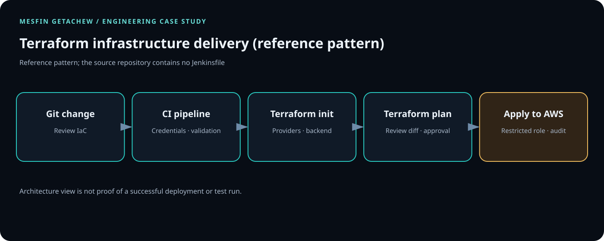

Controlled access
Apply least privilege, protect credentials, scan artifacts and require appropriate review gates.
Terraform · AWS · Infrastructure as Code
AWS infrastructure defined as version-controlled Terraform.

01 / PROBLEM
Manual infrastructure changes can create drift and weak audit trails. Version-controlled IaC makes proposed changes visible, reviewable and repeatable.
02 / SYSTEM FLOW
Terraform configuration → review and validate locally → plan/apply only after appropriate review
03 / PRODUCTION CONSIDERATIONS
Apply least privilege, protect credentials, scan artifacts and require appropriate review gates.
Plan for failure, observable runtime behavior, rollback or recovery and tested runbooks.
Keep configuration versioned, modular and documented.
ARCHITECTURE / INFRASTRUCTURE DELIVERY
This reference pattern shows how to validate version-controlled infrastructure, create a Terraform plan, review the proposed changes, and apply through a narrowly scoped AWS identity.

Run formatting, provider initialization and Terraform validation before producing a plan.
Archive the plan, require approval for sensitive changes, and restrict apply permissions.
Protect remote state, enable locking and audit changes; test recovery from state and deployment failures.
The repository README currently provides only a title. These commands establish what is present; they are not evidence that a pipeline has passed.
git clone https://github.com/DataOpsInnovator/terraform-jenkins-project.git cd terraform-jenkins-project git ls-files find . -name '*.tf' -o -name Jenkinsfile -o -name '*.tfvars.example'
After locating each Terraform root, run terraform fmt -check -recursive and, in a safe environment, terraform init -backend=false followed by terraform validate. Add a README, Jenkinsfile, sample variables, and a redacted plan artifact to make this case study independently reproducible.
04 / ENGINEERING VALUE
Add measurable outcomes only when substantiated. No cost or performance figures have been invented for this case study.